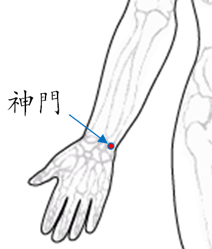

【穴位名稱】: 神門 (HT7)

【治療症狀】: 心悸 心浮氣躁 心動過速 真心痛 心房纖顫 心律不齊 冠心病 貧血 風濕性心臟病 氣喘 血尿 小便不利 夜尿 陽萎 遺精 月經過多 難產 容易焦躁 失眠 不易入睡 神經衰弱 癲癇 夜遊癥 腦炎後遺癥 坐骨神經痛 全身倦怠 容易疲累 夜間盜汗 癲癇
【取穴位置】: 在腕部，腕掌側橫紋尺側端，尺側腕屈肌腱的橈側凹陷處。
【針刺方法】: 直刺0.3～0。5吋。
回前頁